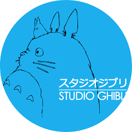

Mes passions
-
Le Tennis
Le tennis est de loin le sport que je préfère pratiquer. Depuis mes 10ans je joue régulièrement au tennis. Il requiert de bonne compétence physique ainsi que mental. Je suis aussi de prêt les compétitions de tennis.
-

Les Jeux Vidéos
J'ai grandi toute ma vie avec les jeux vidéos. J'ai eu une famille qui ma permis de découvrir l'expérience que peut procurer un jeu vidéo. J'ai joué à de nombreux jeux et j'ai toujours adorer l'imersion que cela donne. Plus je grandissais plus ma passion pour les jeux vidéos ont grandi, mais pas uniquement dans l'aspet "jouer au jeu" mais aussi dans la conception d'un jeu vidéo.
-

L'animation Japonaise
L'animation japonaise est pour moi un art incroyable qui peut procurer des sentiments que l'on ne retrouve pas dans les séries ou les films. C'est aussi une grande source d'inspiration dans tous les domaines, que ce soit la musique, le dessin, ou l'histoire.